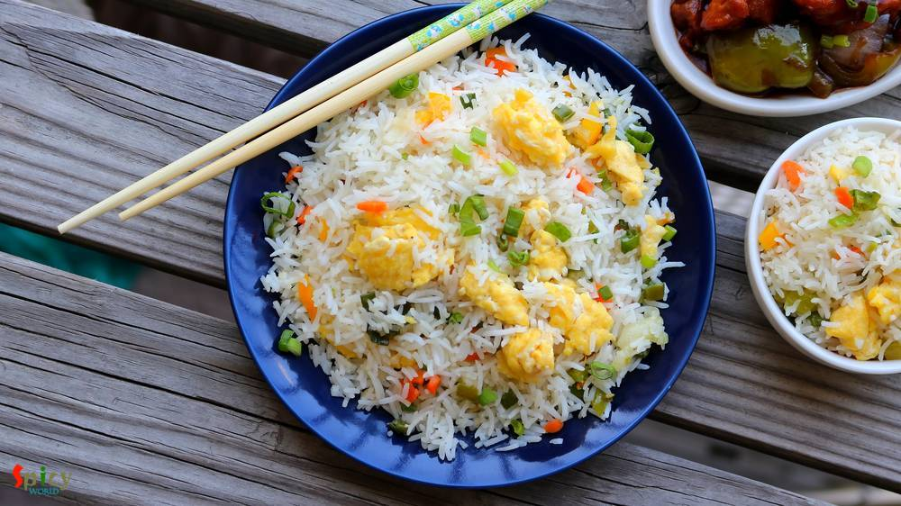
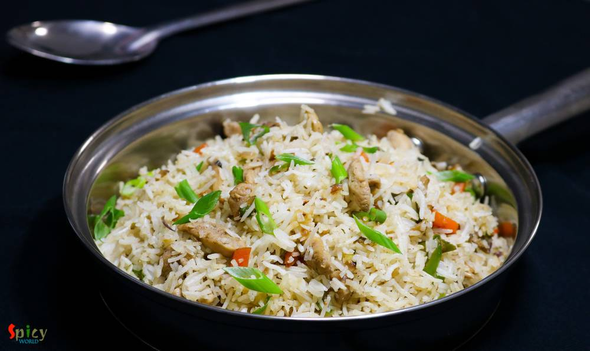
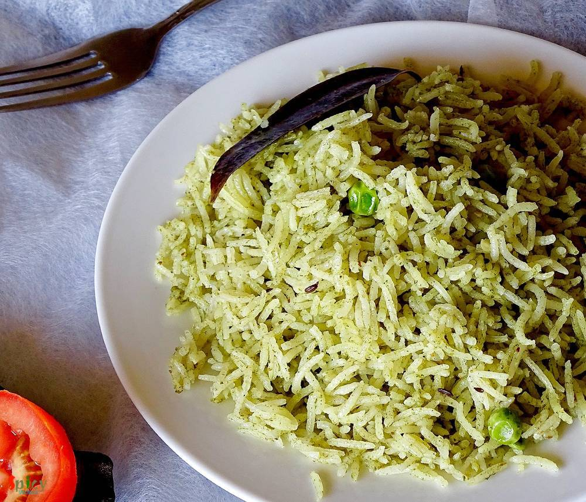
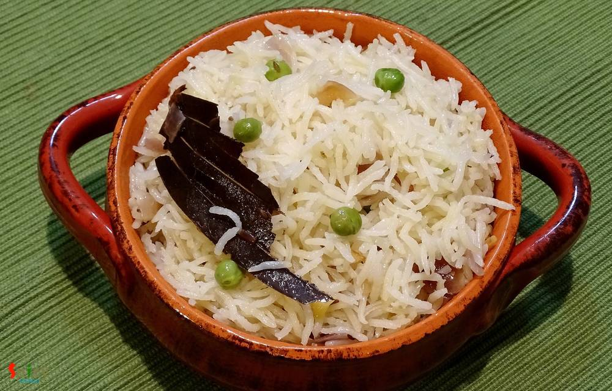

Simple and Easy Recipes

Posts on 'rice'

Nonveg Recipe
Oct 8, 2018
Egg fried rice is a delicious variety of Indo-Chinese fried rices. It's a quick stir fry of rice, veggies and eggs with some seasonings and sauces. The best way to make Egg fried rice is by using left over rice and cooking on high flame, like many Chinese dishes. You can have this fried rice on its own or it can be paired with any manchurian gravy or chili chicken or chili paneer.


Nonveg Recipe
Sep 21, 2018
Kolkata style Chicken Dum Biriyani is one of the tastiest variety of biriyani recipe, which has awesome flavors and juicy chicken pieces. You can have it as it is or with Chicken Chaap / Korma / Kosha. I also have other Biriyani recipes in my blog. Cooking Biriyani is time consuming, also the more you practice the more you will get better at this. The process is lengthy but with few tricks and tip ...
 Pulao / বাসন্তী পোলাও / Holud Pulao / Mishti Pulao")
Veg Recipe
Aug 10, 2018
This is a traditional bengali dish. 'Basanti' means yellow colour. You can also call this Sweet (mishti) Pulao. My mom make this in many gatherings along with Macher Kalia or Mutton Kosha. I have literally no words about the combination. This is the must combination 'he' wants on his birthday. But once we had this with Chicken Dopyaza (already on blog) and that combo was also so good! Give it a tr ...

Veg Recipe
Jul 16, 2018
Zafran which is Saffron is a very expensive and subtle spice. This pulao recipe requires lots of it as we are not using any other overpowering spices. It is a very easy recipe (best to feed a crowd) and goes very well with any type of gravy. Try this pulao in your kitchen and let me know how it turned out for you.

Nonveg Recipe
Apr 17, 2018
Fried rice is everybody's favourite .. agree or not ? You can add whatever ingredient you have in your fridge and thats what happened with me. I had few veggies laying around, so thought why not throw everything with some rice. Best part of this idea - added some chicken strips. After around 10 minutes of stir frying a good wholesome Chicken fried rice was waiting for me to make my soul and tummy ...

Veg Recipe
May 11, 2016
'Pulao' plays a very significant role in Indian cuisine. Our cooking is mostly based upon 'curry' / gravy version which goes best with pulao. Their relationship is like - 'behind every tasty curry, there is a pulao' ... ???? You can never underestimate it because sometimes 'pulao' itself can be very rich and attractive like 'yakhni pulao', 'prawn pulao', 'sweet pulao' and so on. Today I am sharing ...

Veg Recipe
Feb 8, 2016
I am a big fan of different types of 'pulao'. One of my favorite pulao is 'Jeera Rice' because of it's saltiness and spicyness. It goes very well with many types of veg and non veg curry. The recipe is very simple and easy. You can also give 'jeera rice' in any adult's lunch box with dry curry, every combo will become great. Try this in your kitchen and let me know how it turns out.

Nonveg Recipe
Jan 6, 2016
One of my favorite weekday's meal is 'chicken pulao', because it takes very less time to cook. The dish is super tasty but very easy. I basically don't need any sides with this pulao, it itself tastes delicious. I only love to add potatoes but if you like other veggies in your pulao, feel free to add. This is also a very good lunch box option for adults and I can guarantee you that the box will re ...

Nonveg Recipe
Dec 19, 2015
You always have a grand feeling whenever you prnounce the name 'mutton biriyani'. I mean really I need to describe this? It become the most popular indian dish among the world. Biriyani has its own aroma, juicy meat and long grain flavourful rice. But in Kolkata they add boiled potato and egg in their biriyani which makes you more greedy:-) I know that the process is lenthy but believe me you will ...
")
Nonveg Recipe
Oct 23, 2015
In Bengali ceremony preparing any dish with fish head is a very good sign. There are plenty of dishes where they use fish head. But 'muri ghonto' is the delicacy of Bengal. I learned this dish from my mom. There are also some variations of muri ghonto. Some uses yellow lentil or flattened rice instead of gobindovog rice. But I prefer this dish what my mom used to make.
")
Nonveg Recipe
Oct 14, 2015
We Bengalis are very fond of fish. Our common meal is fish curry and rice. This recipe is one of the fish curry which we make in occasions and gatherings. I already gave you one kaliya recipe and this one is also very tasty. Try this at your home and let me know how it turns out.

Veg Recipe
Oct 4, 2015
This dish dont need any explanation. Because its 'Biriyani'. This is the most popular dish in India. The vegetarian version of biriyani is also very tasty Just give a try and impress your family.

Veg Recipe
Sep 17, 2015
There are many varities of fried rice you can make like 'chinese style', 'indian style', 'fried rice with sauce' etc. This recipe is about indian style. This is a complete meal with vegetables. You can add chicken, egg, prwan, mushroom in this dish. You will love this dish.
Contact Us
Guest Post
Subscribe RSS Feed
User Agreement
Public Presence
Feedback
Free Games
Home
Recipes
Categories
Images
Food Plating
About Me
Guest Post
Subscribe RSS Feed
User Agreement
Public Presence
Feedback
Free Games
Home
Recipes
Categories
Images
Food Plating
About Me
What we offer?
- Recipe Development
- Restaurant & Food Review
- Food Photography
- Website, Blog & Application Development
- UX / UI Designing
- Sponsorship & Advertisement
Contact us via Email
contact@spicyworld.in
Who we Are?


Amitava Ghosh
Website & CMS Designer, Developer and Architect.
Website & CMS Designer, Developer and Architect.